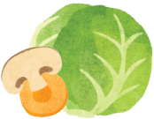
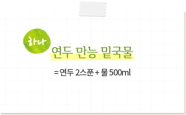
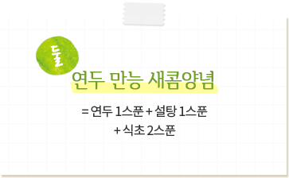
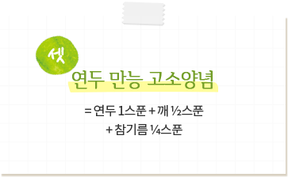

연두 스토리
요리할 땐 연두해요 !
-

“시간도 없고 요리도 어려워요”
연두 하나만으로 쉽게!
-

“이것저것 넣다 보니 맛을 모르겠어요”
재료의 맛과 향이
잘 살아나 맛있게!
-

“우리 가족은 좋은 것만 먹고 싶어요”
자극적이지 않은

순식물성이라 건강하게!
연두 하나만으로 요리가 쉽고 맛있어지는
연두 만능 양념공식!
(연두 1스푼=10ml)




세상에 없던 요리에센스 연두,
우리맛에서 찾았어요.
우리 음식의 맛을 내는 기본은 콩을 발효해 만든 ‘장’입니다.
콩을 잘 발효하여 만든 간장은 우리맛의 핵심이었죠.
연두는 전통 한식 간장의 깊은 맛은 살리고, 진한 색과 향을 줄여
현대 우리 요리에 어울리게 재해석한 콩발효 에센스입니다.
우리맛에서 찾은 요리에센스라서 우리 요리에 잘 어울립니다.